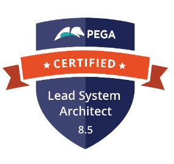

Alvin Jaison
"Principal System Architect | Pega Specialist | Driving Citizen-Centric & Enterprise Digital Transformation"
“I’m Alvin Jaison, a Principal System Architect with 8+ years of expertise in Pega solution architecture. I’ve delivered mission-critical applications across Telecom, Insurance, Government, and Manufacturing—leading high-performing teams to design scalable solutions that solve complex challenges and deliver measurable business impact.”
Experience
MOMRA CRM (Onsite Saudi-Riyadh)
At MOMRA—the driving force behind urban planning and housing development across Saudi Arabia—I enhanced the nationwide CRM system that resolves citizen issues efficiently.
Key Contributions & Impact:
- Led two Scrum teams and served as IRM for offshore delivery, ensuring seamless cross-border collaboration.
- Managed the end-to-end delivery of new citizen case types, boosting efficiency and service coverage.
- Streamlined workflows and documentation standards, reducing manual errors and improving release cycles.
- Fostered a collaborative, high-performance culture through mentorship and code reviews.
- Partnered with QA/UAT teams and stakeholders to ensure smooth, citizen-centric digital service delivery.
Build Digital UK (Shared Rural Network)
Contributed to the UK’s Shared Rural Network (SRN) initiative, expanding 4G coverage to underserved areas.
Key Contributions & Impact:
- Designed and implemented a grant management platform enabling mobile operators to claim funding tied to milestones.
- Supported 280,000+ premises and 16,000 km of roads through faster grant approvals and streamlined payment processes.
- Delivered Pega-based solutions including portals, access roles, REST services, and connectors.
- Maintained a guardrail score above 95%, ensuring scalability and compliance.
- Took ownership across the entire case lifecycle: sprint planning, technical analysis, defect resolution, and deployment.
Verizon OMT/Platform Team
Served as a key contributor to Verizon’s Order Management Tool, enhancing automation, governance, and system integrity.
Key Contributions & Impact:
- Developed automation tools like RuleBase Compare, Offer Validation, and Hotfix Compare, streamlining deployments.
- Led sprint planning, task allocation, and mentoring, driving team productivity.
- Integrated Kibana with Pega and automated product rule creation, improving operational efficiency.
- Owned the delivery of new case types from analysis through production.
- Empowered operations teams to track cases, manage incidents, and maintain system stability across multiple Pega tracks
CISCO Artimes
Contributed to Project Artemis, an IT Asset Management platform unifying financial, contractual, and risk data.
Key Contributions & Impact:
- Designed and developed reusable components for enterprise-wide scalability.
- Led data modeling and migration efforts, moving from legacy systems to Pega.
- Delivered user stories end-to-end, from analysis to deployment.
- Enhanced asset lifecycle visibility, improving decision-making for stakeholders
CISCO Apollo(IBOPs)
Supported the Install Base Operations (IBOP) project, improving asset visibility and customer experience.
Key Contributions & Impact:
- Implemented case management features, SLAs, and job schedulers in PRPC.
- Took ownership of analysis, development, deployment, and support for user stories.
- Collaborated with LSAs and support teams to resolve defects and ensure seamless integration.
- Streamlined asset lifecycle tracking, improving contract renewals and customer confidence.
Automobile Association(UK Client)
Enhanced policy management systems for the UK’s largest roadside assistance provider.
Key Contributions & Impact:
- Delivered CR enhancements across Road Membership, Breakdown Cover, and Motor Insurance modules.
- Implemented client-side validations and resolved SLA/production-critical defects.
- Implemented client-side validations and resolved SLA/production-critical defects.
- Developed business logic through properties, activities, and flows.
- Ensured high-quality delivery with Tracer and Rules Inspector tools.
Education
Osmania University
Narayana Junior College
St.Theresa High School
Skills
- 
-

- Case Management
- Cross Functional Teams
- Agile Development & Scrum
- Business Process Management
- Unified Channel Development
- Cross Browser Testing & Debugging